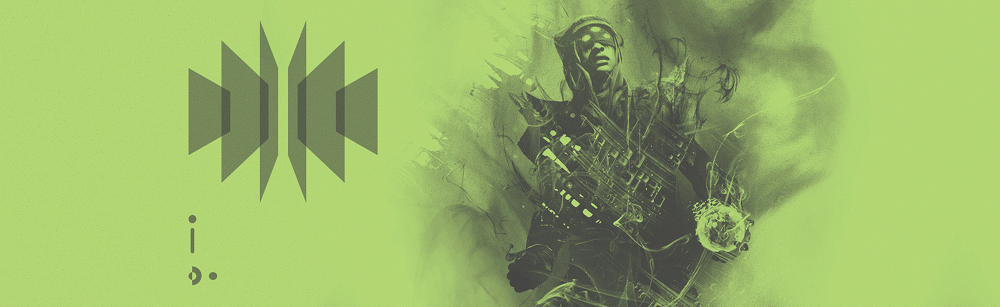

My head is throbbing, but I press on. This place I have found—it promotes pain. The Hive are fond of the anguish they bring. They will not deter me. It’s been months since I left the Tower. What do I have to show for my journey? Dead ends. Whispers. Nothing.
Whatever the Hive are plotting eludes me. Each location I survey holds the promise of answers, yet each has let me down.
Let this be the one.
I feel myself drawing near as the tunnels turn from rock and filth to tiles and pomp. Something… is off. I have yet to encounter even a single Thrall. I would count myself lucky, but I know better.
Stick to the shadows. Use the columns and pillars. Caution isn’t cautious enough.
I see ancient scrolls. Tablets. Something here must prove useful.
No.
Incomprehensible babble. Could I have been wrong all along? Are they as lost as we are?
A light breeze scatters the scrolls. A breeze? Underground?
“Eris…"
A voice carried on the wind. Sai? It can’t be.
A laugh from down the corridor. Eriana’s. “Come back to us, Eris.” Vell…
They’re dead. This can’t be real. I won’t fall prey to tricks of the Hive.
The gust picks up, bringing with it the dust and soot from the tunnels. It sucks the air from the room. I can barely stand.
“Did you believe it would be so easy?” Toland this time. The voice echoes all around me.
This cruelty…
“No, Witch. I thought it… would prove more difficult… to find you.”
A wailing scream assaults me. It’s a scream etched deeply in my mind. Poor Omar…
I won’t let Her shake me.
“Tell me, Archentrope, now that you have me… what will you do with me?”
Eriana appears before me, a construct of rock and sand. How dare She—
“Do? Child of the Hive, can’t you see? We are one. Do you hate it?”
I cringe with displeasure. Child of the Hive? Am I? Is this why I am still alive? I refuse.
“You are no more my family than a parasite is to a host. You will die, like your brother before you.”
She cackles. My stomach turns.
“If only you had gazed upon the dark majesty that slumbered beneath you…”
Beneath me? Her words are twisted half-truths. Do not succumb.
The dirt and debris in the air spin wildly, colliding into me. I’m trapped in a whirlwind. My chest grows tight. Breath short. I can’t see. It’s all around me.
“To be so near, only to scratch the surface, must tear at the filament of your mind.”
The storm begins to die down; I hack up the grime, regaining my sight.
“Open your eyes, Eris…”
The color dissipates from the world around me.
As the dust settles, I realize I am not where I was. A green-black sun hangs in the sky and a glowing orb floats in the distance.
Darkness is all around me and I am alone. Again.